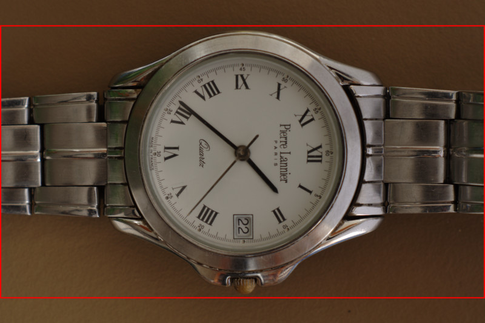

This page shows a simple way to create HD timelapse videos with pkTriggerCord using a Pentax DSLR camera.
Take pictures
pktriggercord-cli --frames 150 --delay 8 --aperture=5.6 --shutter=1/4 --iso=800 -o timelapseThis command takes 150 pictures. The delay is 8
seconds (it will take approx. 20 minutes). More information about
the command line parameters can be
found here. The process will
create 150 files: timelapse-0000.dng, timelapse-0001.dng,...
Convert to png
ufraw-batch --temperature=5500 --exposure=0 --out-type=png timelapse*.dngConverting the raw dng images to png using a raw-converter (It is possible to skip this step if you create jpeg files in step 1). I use ufraw in this step.
This process will create 150 files:
timelapse-0000.png, timelapse-0001.png,...
Resize images
for i in `seq -w 0 149`; do
convert timelapse-0${i}.png -gravity Center -crop 4272x2403+0+0 +repage -resize 1920x1080 -quality 90 timelapse-0${i}_small.jpg;
doneChanging the aspect ratio and reducing the size of the images.
The aspect ratio of the still images is usually 3:2. The typical aspect ratio for videos is 16:9 (or maybe 4:3) so I change the aspect ratio by cropping the top and the bottom part of the images:
I also reduce the size of the images in this step. For a 1080p video 1920x1080 size will be enough. For the resize/crop I'm using imagemagick.
Arguments in this step differ based on your camera model and your raw-converter. Since the size of my original image was 4272x2848, I cropped it to 4272x2403 and resized it to 1920x1080.
This process will create 150 files:
timelapse-0000_small.jpg, timelapse-0001_small.jpg,...
Create video
ffmpeg -r 25 -i timelapse-%04d_small.jpg -vcodec libx264 -vpre normal -b 1800k -aspect 16:9 timelapse.mkvI'm using using ffmpeg to create a video from the still images.